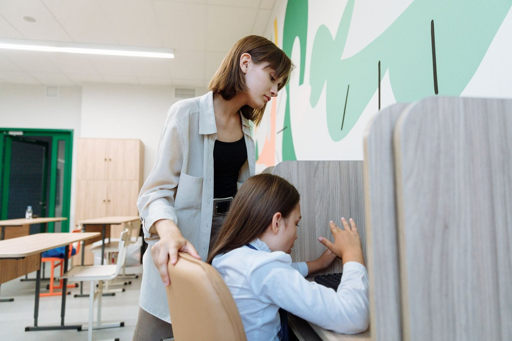

She does not want to file a ticket. She wants the class to load.
Asking Fyxit takes fifteen seconds and happens in the room. No portal, no ticket number, no waiting until sixth period.
Fyxit answers the teacher first. It restarts the device, runs the diagnostic and closes the issue — so 60% of your queue never becomes a queue.
One line of code. Works with the ticketing system you already run.
This is what a district's first hour looks like with Fyxit in front of it. The routine issues close themselves. What escalates arrives with the diagnosis already attached, instead of as "my computer is broken."
Fyxit does not replace your helpdesk. It answers first, resolves what it can, and hands the rest to the system your district already runs — with the diagnosis attached.
One line of code. It is answering the same afternoon.
Live device telemetry, so it knows the state of the machine before it replies.
It ingests your knowledge base and escalates with context, not a transcript.
Students and staff see your district's portal, not ours.
Every routine ticket is a teacher losing a lesson and a technician losing a drive across the district. Fyxit is the thing that stands between them.

Asking Fyxit takes fifteen seconds and happens in the room. No portal, no ticket number, no waiting until sixth period.
Sixty percent of that queue closes without her. What reaches her arrives diagnosed, not described.
Deploy in an afternoon and watch what closes itself. If it does not shorten your queue in the first week, you have lost an afternoon.